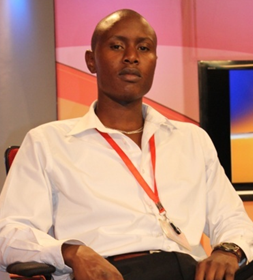
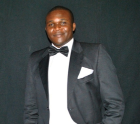

Meet the team.

Arthur Wanyoike
He is the Chairman of Bracket Digital Solutions. He is also graphics designer by profession and works for the leading broadcaster in Kenya, Citizen TV where he has been since 2008, when he joined as an intern.
During this time he has handled some demanding, yet successful graphics projects such as The Presidential Debate, Slimpossible 1-4, The Presidential Election 2013, The Referendum and many others
He is also a blogger and poet and has his mark on several sites across the internet including charminator.deviantart.com , wamathai.com , soccerparanoia.blogspot.com and www.cleansheet.co.ke.
He has also at one time done social media management for Sixty Three wines, running their Twitter and Instagram pages. Arthur went to Shang Tao Media Arts College and has a Diploma in Multimedia Design
Talmon Mwazo
He is the Vice Chair of Bracket Digital Solutions and a Computer Engineer by profession.
He works at Higher Education Loans Board as a front -office attendant as well as an IT technician. He has 2 years experience.
He is also really good at web design and programming using PHP and Python languages respectively.
He went to Kenyatta University and graduated with a BSC. in Computer Science.
Jeremy Njoroge
He is the Head of ICT at Bracket Digital(Because we have so many IT guys) and is also the Company Secretary.
He is a freelance web and software developer and a bottomless pit when it comes to knowledge on related matters. He has previously worked with Unga Group as a Systems Developer
His passion for all things programming is unmatched. He is comfortable coding with all Computer Languages
He went to Jomo Kenyatta University of Agriculture and Technology (JKUAT) and graduated with a bachelor's degree in Biomechanical and Processing Engineering

Henry Githaiga
Henry Githaiga is an experienced Media Practitioner with nine years of experience in media as a radio presenter and producer, creative scriptwriter and editor with interest in commercials and public service announcement. He is currently the Media Relations and Communications Manager at The Kenya Private Sector Alliance (KEPSA). He was a senior business reporter and Content Producer at Citizen Television a station under Royal Media Services Limited which owns 13 radio stations and one television station.
As content producer and editor at Citizen Television he helped managed and produce content for Citizen Television’s coverage of the 2013 elections as a night time producer. He was also a sub-editor and co-producer for Citizen Television’s business segment as well as the Wednesday special ‘Citizen Business Centre’.
Kiarie Mburu
Kiarie is a web and software developer in which he has great experience and has proficiency in many frameworks and API’s such as Python, PHP, HTML/CSS, JavaScript and Ruby (including rails framework). He has a passion for UX/UI design especially with HTML5/CSS3 standards
He has worked as software developer for a project at Tangerine System Solutions
and has also previously worked with Ernst & Young in the Biometric Registration of Civil servants as Technical support.
He went to Jomo Kenyatta University of Agriculture and Technology(JKUAT) and graduated with a Bachelor of Science degree in Information Technology.
Humphrey Ronnoh
He is the Company Treasurer and an Engineer by profession.
He is a Diploma holder in Aeronautical Engineering (Mechanical).